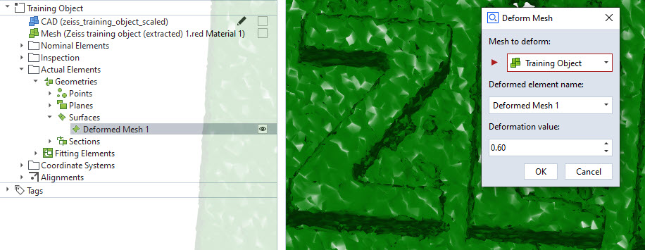

trimesh_deform_mesh

Short description
This example demonstrates how to generate a custom surface element using a scripted element. The example script accesses mesh information from an existing mesh in the project and adds a random deformation to each point.
Finally, the result is transfered back to the ZEISS INSPECT Software, where an actual surface element is created.
Highlights
The dialog was created using the script dialog editor and contains an “Element selection” widget to let the user choose which mesh to deform.
Dialog: Element filter
In the script, a filter function is implemented to populate the “Element selection” widget only with elements of a certain type. To this end, the widget’s type property is first set to “User-defined script function”.

Then, in the script, the filter property is set to the following function:
def element_filter(element):
try:
if element.type in ['mesh','cad_body']:
return True
except Exception as e:
pass
return False
DIALOG.selected_element.filter = element_filter
Furthermore, the dialog contains a name widget with a default name set for the result element and a decimal widget to let the user choose the magnitude of deformation.
Calculation: Mesh deformation with trimesh
The logic of mesh deformation happens in the calculation function. Here, the stored parameters are read from the ‘params’ array and used to perform the calculation.
The access to the mesh data is done via numpy arrays that can be retrieved by an elements data interface. This interface is accessible by the .data property and yields the results usually for all stages. Using [s] as a subscript gives the data for stage s.
vertices = np.array (selected_element.data.coordinate)[s]
triangles = np.array (selected_element.data.triangle)[s]
# Creating a mesh in 3rd party library "trimesh"
mesh = trimesh.Trimesh (vertices, triangles)
# Using the deformation algorithm of trimesh
deformed = trimesh.permutate.noise (mesh, deformation)
# Converting to target dtypes
deformed_vertices = deformed.vertices
deformed_faces = np.array (deformed.faces, dtype=np.int32)
# Setting the result to transfer back to the GOM Software
context.result[s] = { 'vertices': deformed_vertices, 'triangles': deformed_faces }
In this case, we retrieve the vertices and triangles of the selected mesh.
To deform the mesh, we then apply some noise to the data using trimesh’s noise permutator. We finally transform our results into the supported formats and set the results of this stage in the context.result[s] variable.